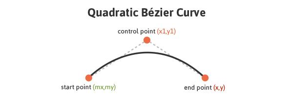
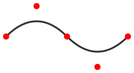
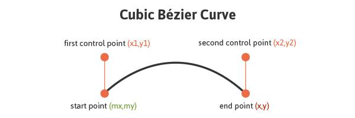
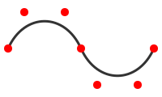
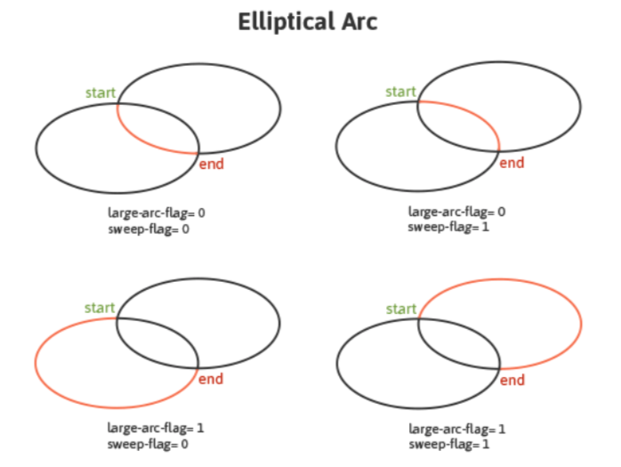

10 Path
| (require simple-svg) | package: simple-svg |
procedure
(svg-def-path procedure) → void?
procedure : procedure?
10.1 Raw Path
procedure
(svg-path-raw data) → void?
data : string?
(let ([path (svg-def-path (lambda () (svg-path-raw "M248.761,92c0,9.801-7.93,17.731-17.71,17.731c-0.319,0-0.617,0-0.935-0.021 c-10.035,37.291-51.174,65.206-100.414,65.206 c-49.261,0-90.443-27.979-100.435-65.334 c-0.765,0.106-1.531,0.149-2.317,0.149c-9.78,0-17.71-7.93-17.71-17.731 c0-9.78,7.93-17.71,17.71-17.71c0.787,0,1.552,0.042,2.317,0.149 C39.238,37.084,80.419,9.083,129.702,9.083c49.24,0,90.379,27.937,100.414,65.228h0.021 c0.298-0.021,0.617-0.021,0.914-0.021C240.831,74.29,248.761,82.22,248.761,92z")))] [sstyle_path (sstyle-new)]) (sstyle-set! dot_style 'fill "red") (sstyle-set! style_style 'fill "7AA20D") (sstyle-set! style_style 'stroke-width 9) (sstyle-set! style_style 'stroke "#7AA20D") (sstyle-set! style_style 'stroke-linejoin 'round) (svg-use-shape path sstyle_path) (svg-show-default))
10.2 svg-path-moveto/svg-path-moveto*
procedure
(svg-path-moveto* point) → void?
point : (cons/c natural? natural?)
moveto use relative position.
10.3 svg-path-close
procedure
(svg-path-close) → void?
10.4 svg-path-lineto/lineto*/hlineto/vlineto
procedure
(svg-path-lineto point) → void?
point : (cons/c integer? integer?)
procedure
(svg-path-lineto* point) → void?
point : (cons/c integer? integer?)
procedure
(svg-path-hlineto point) → void?
point : integer?
procedure
(svg-path-vlineto point) → void?
point : integer?
(let ([path (svg-def-path (lambda () (svg-path-moveto* '(5 . 5)) (svg-path-hlineto 100) (svg-path-vlineto 100) (svg-path-lineto '(-50 . 50)) (svg-path-lineto '(-50 . -50)) (svg-path-close)))] [path_sstyle (sstyle-new)]) (sstyle-set! path_style 'stroke-width 5) (sstyle-set! path_style 'stroke "#7AA20D") (sstyle-set! path_style 'stroke-linejoin 'round) (svg-use-shape path path_sstyle) (svg-show-default))
10.5 svg-path-qcurve/qcurve*

procedure
(svg-path-qcurve point1 point2) → void?
point1 : (cons/c natural? natural?) point2 : (cons/c natural? natural?)
qcurve use relative position, relative to the start position.
procedure
(svg-path-qcurve* point1 point2) → void?
point1 : (cons/c natural? natural?) point2 : (cons/c natural? natural?)
(let ([path (svg-def-path (lambda () (svg-path-moveto* '(10 . 60)) (svg-path-qcurve* '(60 . 10) '(110 . 60)) (svg-path-qcurve* '(160 . 110) '(210 . 60)))) ] [path_style (sstyle-new)] [red_dot (svg-def-circle 5)] [dot_style (sstyle-new)]) (sstyle-set! path_style 'stroke "#333333") (sstyle-set! path_style 'stroke-width 3) (svg-use-shape path path_style) (sstyle-set! dot_style 'fill "red") (svg-use-shape red_dot dot_style #:at? '(10 . 60)) (svg-use-shape red_dot dot_style #:at? '(60 . 10)) (svg-use-shape red_dot dot_style #:at? '(110 . 60)) (svg-use-shape red_dot dot_style #:at? '(160 . 110)) (svg-use-shape red_dot dot_style #:at? '(210 . 60)) (svg-show-default))
(svg-path-moveto* '(10 . 60)) (svg-path-qcurve '(50 . -50) '(100 . 0)) (svg-path-qcurve '(50 . 50) '(100 . 0))
little red pots show the control points.

10.6 svg-path-ccurve/ccurve*

procedure
(svg-path-ccurve point1 point2 point3) → void?
point1 : (cons/c natural? natural?) point2 : (cons/c natural? natural?) point3 : (cons/c natural? natural?)
ccurve use relative position, relative to the start position.
procedure
(svg-path-ccurve* point1 point2 point3) → void?
point1 : (cons/c natural? natural?) point2 : (cons/c natural? natural?) point3 : (cons/c natural? natural?)
(let ([path (svg-def-path (lambda () (svg-path-moveto* '(10 . 60)) (svg-path-ccurve* '(30 . 15) '(80 . 15) '(100 . 60)) (svg-path-ccurve* '(120 . 105) '(170 . 105) '(190 . 60)) ))] [path_style (sstyle-new)] [red_dot (svg-def-circle 5)] [dot_style (sstyle-new)]) (sstyle-set! path_style 'stroke "#333333") (sstyle-set! path_style 'stroke-width 3) (svg-use-shape path path_style) (sstyle-set! path_style 'fill "red") (svg-use-shape red_dot dot_style #:at? '(10 . 60)) (svg-use-shape red_dot dot_style #:at? '(30 . 15)) (svg-use-shape red_dot dot_style #:at? '(80 . 15)) (svg-use-shape red_dot dot_style #:at? '(100 . 60)) (svg-use-shape red_dot dot_style #:at? '(120 . 105)) (svg-use-shape red_dot dot_style #:at? '(170 . 105)) (svg-use-shape red_dot dot_style #:at? '(190 . 60)) (svg-show-default))
(svg-path-moveto* '(10 . 60)) (svg-path-ccurve '(20 . -45) '(70 . -45) '(90 . 0)) (svg-path-ccurve '(20 . 45) '(70 . 45) '(90 . 0))
little red pots show the control points.

10.7 svg-path-arc/arc*

procedure
(svg-path-arc point radius direction) → void?
point : (cons/c integer? integer?) radius : (cons/c natural? natural?) direction : (or/c 'left_big 'left_small 'right_big 'right_small)
the arc is a part of ellipse, through start and end point.
point is the end point.
radius specify the ellipse’s size.
direction is a simplified large-arc-flag and sweep-flag’s comibination.
procedure
(svg-path-arc* point radius direction) → void?
point : (cons/c integer? integer?) radius : (cons/c natural? natural?) direction : (or/c 'left_big 'left_small 'right_big 'right_small)
(let ( [arc1 (svg-def-path (lambda () (svg-path-moveto* '(130 . 45)) (svg-path-arc* '(170 . 85) '(80 . 40) 'left_big)))] [arc2 (svg-def-path (lambda () (svg-path-moveto* '(130 . 45)) (svg-path-arc* '(170 . 85) '(80 . 40) 'left_small)))] [arc3 (svg-def-path (lambda () (svg-path-moveto* '(130 . 45)) (svg-path-arc* '(170 . 85) '(80 . 40) 'right_big)))] [arc4 (svg-def-path (lambda () (svg-path-moveto* '(130 . 45)) (svg-path-arc* '(170 . 85) '(80 . 40) 'right_small)))] [arc_style (sstyle-new)] [red_dot (svg-def-circle 5)] [dot_style (sstyle-new)] ) (sstyle-set! arc_style 'stroke-width 3) (let ([_arc_style (sstyle-clone arc_style)]) (sstyle-set! arc_style 'stroke "#ccccff") (svg-use-shape arc1 _arc_style)) (let ([_arc_style (sstyle-clone arc_style)]) (sstyle-set! arc_style 'stroke "green") (svg-use-shape arc2 _arc_style)) (let ([_arc_style (sstyle-clone arc_style)]) (sstyle-set! arc_style 'stroke "blue") (svg-use-shape arc3 _arc_style)) (let ([_arc_style (sstyle-clone arc_style)]) (sstyle-set! arc_style 'stroke "yellow") (svg-use-shape arc4 _arc_style)) (sstyle-set! dot_style 'fill "red") (svg-use-shape red_dot dot_style #:at? '(130 . 45)) (svg-use-shape red_dot dot_style #:at? '(170 . 85)) (svg-show-default))